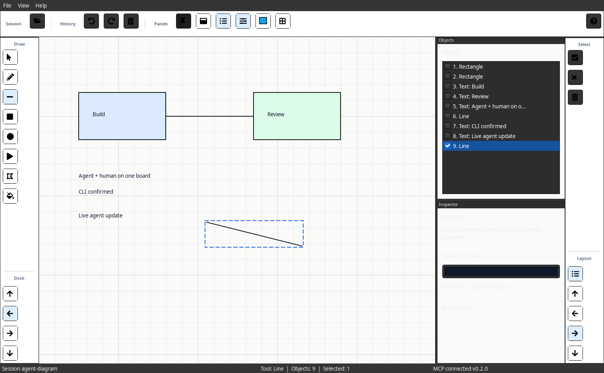

Start here
Work together on the same board
Boardmesh gives a person and an agent one local drawing space. Draw a shape, select an object, ask for a change, and inspect the result in the desktop window.
Use it to discuss architecture, explain code, review a plan, investigate a problem, or prepare a visual handoff. Boards remain editable JSON files. PNG exports give you a shareable image.
Try your first board
Create a two-step workflow, ask an agent to change a selected shape, and save the result.
Follow the tutorialWork with an agent
Use selection and object IDs to make requests precise. Take turns on edits and keep the person in control of the result.
Use the collaboration workflowFind a useful application
Use concrete prompts for design reviews, incident analysis, onboarding, and project planning.
Explore use cases and benefitsConnect your tools
The desktop, MCP server, and CLI share the local runtime. No other Mesh application is required.
Install and verify Boardmesh
Choose a guide
| Your goal | Read |
|---|---|
| Understand where Boardmesh helps | Product overview and benefits |
| Learn by building a board | Your first shared board |
| Use the desktop controls | Desktop reference |
| Ask an agent to inspect or edit a board | Agent guide and prompts |
| Understand connector compatibility and obstacle avoidance | Connector routing |
| Look up arguments and responses | All MCP tools · JSON catalog |
| Back up boards or understand session scope | Files, sessions, and runtime |
| Fix a connection or export problem | Troubleshooting |
| Build or contribute | Development and distribution |
Current product scope
These guides describe Boardmesh 0.2.0 and the tested local workflow. The supported downloadable package is Linux x86_64. Boardmesh has a native desktop editor and local agent interfaces. Browser editing, hosted rooms, and remote multi-user synchronization are not delivered by this release.
Design material
The following documents explain models and proposed directions. They are not a claim that every proposed control or tool is implemented: infinite universe and graph canvases, semantic links and endpoints, link marker catalog, and the browser workspace prototype.